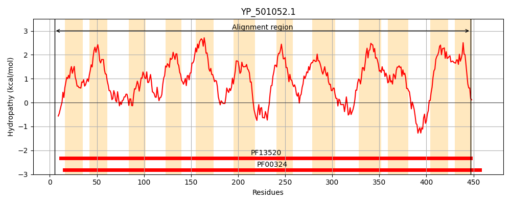
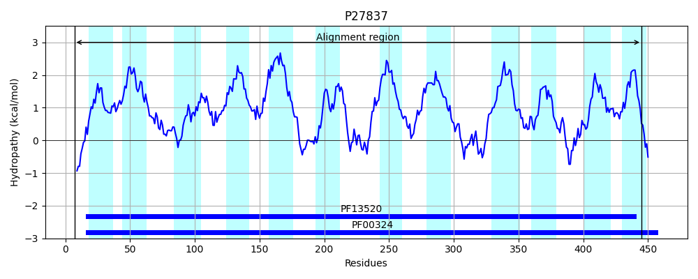
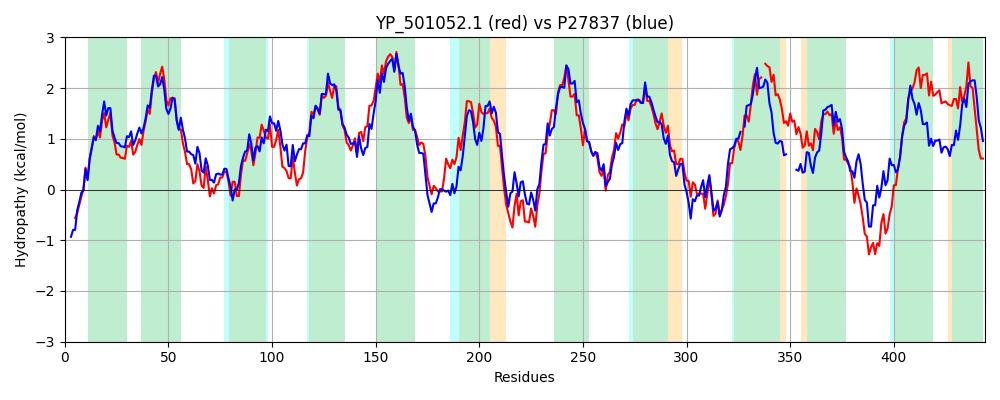

Hit Accession: P27837
Hit TCID: 2.A.3.1.15
Hit Description: gnl|BL_ORD_ID|9630 gnl|TC-DB|P27837|2.A.3.1.15 Probable transport protein YifK OS=Escherichia coli (strain K12) GN=yifK PE=1 SV=4
Mach Len: 444
e:0.000000
Query TMS Count : 12
Hit TMS Count: 12
TMS-Overlap Score: 11.200000
Predicted Substrates:None
BLAST Alignment:
Score: 1421 , Bit scores: 551 bits, E-value: 0.0e+00, Alignment length: 444, Percentage identity: 60
Query: 5 ELQRGLSARQIQMIALGGTIGVGLFMGATSTIKWTGPSVILAYLIAGIFLFLIMRAMGEMIYLNPTTGSFATFASDYIHPAAGYMTAWSNIFQWIVVGMSEVIAVGEYMKFWFPELPTWIPGVIAILLLMAANLFSVKAFGEFEFWFALIKVVTIILMIIAGFGLIFFGFGNGGHAVGISNLWTNGGFMPNGIVGFFFALSIVIGSYQGVELIGITAGETKDPQKNIVKAVNGVIWRILIFYLGAIFVIVSVYPWNQLGDIGSPFVATFAKIGITFAAGLINFVVLTAAMSGCNSGIFSASRMIYTLAHKGEMPKIFTKIMRNGVPLYTVVAVSLGI-LIGALLNVILPLYIDGAKSIFVYVYSASILPGMIPWFMILFSHLRFRKLHPEELEGHPFKMPGGAVTNYLTILFLILVLVGMVFNVETRISVLIGVIFLTIVTIYY 447
ELQRGL AR I++IALGGTIGVGLFMGA ST+KW GPSV+LAY+IAG+F+F IMR+MGEM++L P TGSFA +A Y+ P GY+TAWS F W+ VG+SE+ A+G Y++FWFPE+ WIP +IA+ L+ ANL +V+ +GE EFWFA+IKV TII+MI+ G G+IFFGFGNGG ++G SNL +GGF G GF AL IV+ SYQGVELIGITAGE K+PQ + AV V+WRILIFY+GAIFVIV+++PWN++G GSPFV TFAKIGIT AAG+INFVVLTAA+SGCNSG++S RM+Y LA ++P K+ R+GVP+ VAVS+ I LIG+ LN I+P + +FVYVYSAS+LPGM+PWF+IL S LRFR+ H + HPF+ NY+T+ FLI VL+GM FN +TR+S+ +G+IF+ VT Y
Sbjct: 7 ELQRGLEARHIELIALGGTIGVGLFMGAASTLKWAGPSVLLAYIIAGLFVFFIMRSMGEMLFLEPVTGSFAVYAHRYMSPFFGYLTAWSYWFMWMAVGISEITAIGVYVQFWFPEMAQWIPALIAVALVALANLAAVRLYGEIEFWFAMIKVTTIIVMIVIGLGVIFFGFGNGGQSIGFSNLTEHGGFFAGGWKGFLTALCIVVASYQGVELIGITAGEAKNPQVTLRSAVGKVLWRILIFYVGAIFVIVTIFPWNEIGSNGSPFVLTFAKIGITAAAGIINFVVLTAALSGCNSGMYSCGRMLYALAKNRQLPAAMAKVSRHGVPV-AGVAVSIAILLIGSCLNYIIP----NPQRVFVYVYSASVLPGMVPWFVILISQLRFRRAHKAAIASHPFRSILFPWANYVTMAFLICVLIGMYFNEDTRMSLFVGIIFMLAVTAIY 445 | Protein Hydropathy Plots: |
|---|
|  |  |
Pairwise Alignment-Hydropathy Plot:
|
|---|
|  |